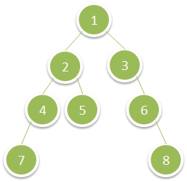

1302. 层数最深叶子节点的和
BFS 逐层走，sum 每层开头归零重新累加；整个 while 走完时留下的恰好是最深一层的和。
思路
- 队列里「这一轮的
size个」正好是一层：按size弹完，队列里剩下的就是下一层。 - 关键小技巧：
sum不在层尾结算，而是每层开头sum = 0重来——循环结束后它自动停在最深层。 - 最深一层的结点必然全是叶子，不用额外判断「是不是叶子」。
图解
最优解
1import java.util.*;2 3class Solution {4 public int deepestLeavesSum(TreeNode root) {5 Queue<TreeNode> queue = new ArrayDeque<>();6 queue.add(root);7 int sum = 0;8 while (!queue.isEmpty()) {9 sum = 0; // 每层重新累加，整个循环结束时留下的就是最深层之和10 for (int size = queue.size(); size > 0; size--) {11 TreeNode node = queue.poll();12 sum += node.val;13 if (node.left != null) queue.add(node.left);14 if (node.right != null) queue.add(node.right);15 }16 }17 return sum;18 }19}题目
给你一棵二叉树的根节点 root ，请你返回 层数最深的叶子节点的和 。
示例 1：

输入：root = [1,2,3,4,5,null,6,7,null,null,null,null,8] 输出：15
示例 2：
输入：root = [6,7,8,2,7,1,3,9,null,1,4,null,null,null,5] 输出：19
提示：
- 树中节点数目在范围
[1, 104]之间。 1 <= Node.val <= 100
题面取自力扣当前版本。
数据快照 2026-11-04。题面版权归力扣所有，本站点仅供本人学习使用，请勿对外发布。